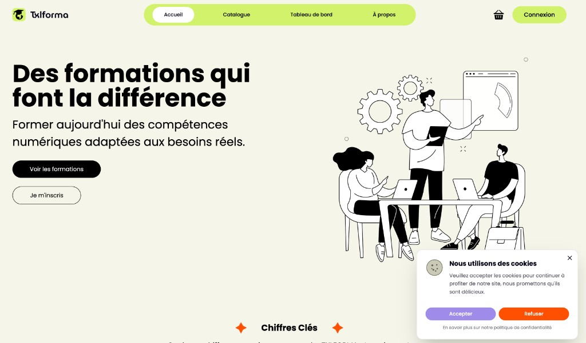
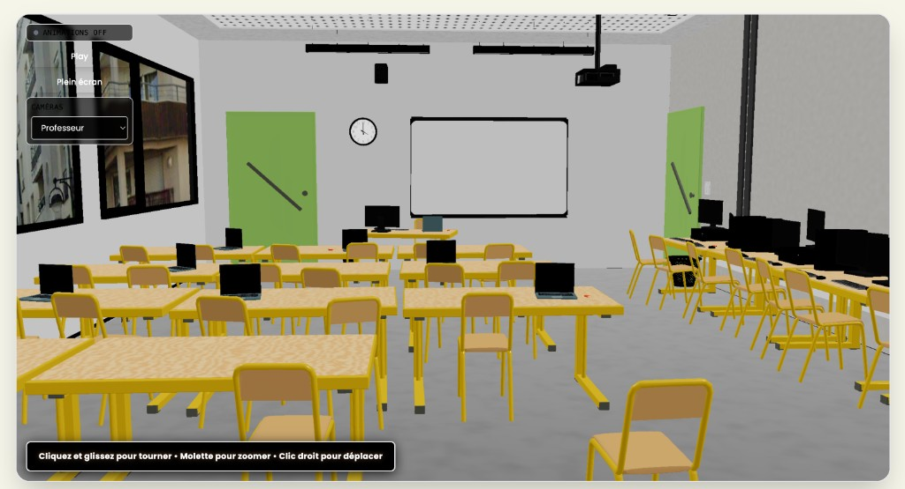

Contexte & objectif
TXLFORMA est un projet de site de vente de formations en ligne. L’objectif était de livrer une plateforme complète : interface utilisateur moderne (accueil, catalogue, tableau de bord), création de compte avec rôles (utilisateur, formateur, administrateur), paiement sécurisé, suivi pédagogique (notes, émargement), et une expérience immersive via une salle de classe modélisée en 3D intégrée au site.
Stack technique
Design & front-end
Maquette du site réalisée sur Figma (inspiration plateformes e-learning). Développement de l’interface en React / JavaScript : page d’accueil avec accroche et boutons d’action (Voir les formations, Je m’inscris), catalogue, tableau de bord selon le rôle. Parcours d’inscription et connexion, gestion des rôles (utilisateur, formateur, administrateur). Intégration de Stripe pour le paiement des formations. Suivi des tâches et code en équipe avec Jira, Bitbucket et Git.
Modélisation 3D & intégration web

Modélisation complète d’une salle de classe dans Blender (tables, chaises, PC, portes, fenêtres, tableau, équipements) à partir de photos, tutos et imagination. Création des textures avec l’outil Shading et bake pour de bonnes performances en temps réel. Création d’animations (caméras, éléments de scène). La scène 3D est intégrée au site avec des contrôles interactifs : rotation, zoom, déplacement (clic droit), choix de caméras (ex. vue « Professeur »).
Back-end & API
API développée en Spring Boot : gestion des comptes, des formations, des sessions et des inscriptions. Données exposées pour alimenter le tableau de bord (chiffre d’affaires, nombre d’utilisateurs, taux de réussite, etc.) et les fonctionnalités métier (notes, émargement).
Tableau de bord & datavisualisation

Pour les administrateurs, tableau de bord avec datavisualisations : chiffre d’affaires (courbe), nombre d’utilisateurs total (répartition par rôle : utilisateur, formateur, administrateur), formations par catégorie, activités récentes (nouveaux utilisateurs). Indicateurs complémentaires : sessions à venir, moyenne générale des sessions. Gestion des notes des apprenants et de l’émargement pour le suivi pédagogique.
Gestion de projet
Organisation du travail avec Jira (user stories, sprints, suivi). Versioning et revue de code avec Git et Bitbucket. Coordination entre la modélisation 3D, le front-end et le back-end pour une expérience cohérente.